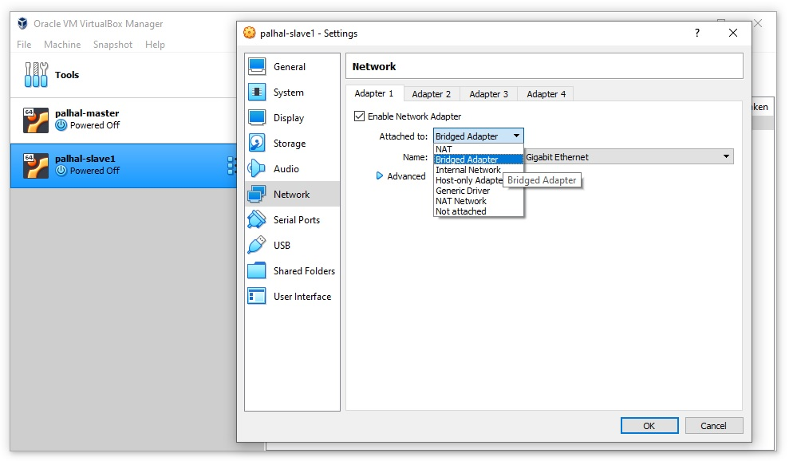
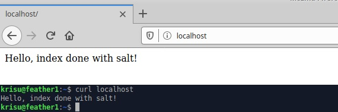

Package-File-Service
15.04.2020, Kristian KoponenTehtävänanto
Palvelinten hallinta H2
Käytetyt laitteet
Windows 10
| Prosessori: | Intel(R) Core(TM) i5-2500K @ 3.30Ghz |
|---|---|
| Keskusmuisti: | 8GiB DDR3 |
| Näytönohjain: | Nvidia GTX 970 |
| Käyttöjärjestelmä: | Windows 10 64-bit |
VirtualBox 6.1
xubuntu 18.04.4 amd64 ISO
Jatkan tehtävää edellisen viikon pohjalta. Hello Salt!
VirtualBox Master-koneelle on siis asennettuna salt-master ja salt-minion paketit. Minion-tiedosto on konfiguroitu ja avain on hyväksytty salt-masterilla.
Teen tätä tehtävää varten erillisen slave-koneen valmiiksi samalla tavalla kuin viime viikon tehtävässä. (VirtualBox)
Uusi ohjelma / Demonin asetukset
Apachen asennus | Apachen oletussivun muokkaaminen | Apachen konfiguraatio (manuaalisesti) | Apachen konfiguraatio (SaltStackilla) | Apachen uudelleen käynnistys | Hakemiston ja tiedoston luonti | LopputestausUusi ohjelma. Asenna + tee asetukset + testaa jokin sovellus, jota ei ole käsitelty tunnilla. Asenna ensin käsin, ja käytä sen jälkeen find-komentoa etsiäksesi muuttuneet tiedostot.
Demonin asetukset. Säädä jokin demoni (asenna+tee asetukset+testaa) package-file-service -rakenteella. Tunnilla muutettiin ssh:n porttinumeroa, joten tee jotain muuta.
Asennan SaltStackilla Apache2 palvelimen ja teen sen konfiguroinnille alkutoimet.
Apachen asennus
Navigoidaan master-koneen /srv/salt -kansioon
$ cd /srv/saltEdellisen viikon tehtävien jäljiltä kansio näyttää tältä.
$ tree
.
├── hellosalt.txt
├── hello.sls
├── installs.sls
└── top.sls
0 directories, 4 files
Poistetaan turhat hello world tiedostot.
$ sudo rm hello*Tehdään uusi kansio installs/ paketinasennus tilojen tiedostolle installs.sls. Nimetään kyseinen tiedosto uudelleen init.sls ja siirretään luotuun kansioon.
$ sudo mkdir installs
$ sudo mv installs.sls installs/init.sls
$ tree
.
├── installs
│ └── init.sls
└── top.sls
1 directory, 2 filesMuokataan installs/init.sls tiedostoa siten että se asentaa apache2:n
$ sudoedit installs/init.slsapache2:
pkg.installedTarkastetaan top.sls tiedosto kuntoon.
$ sudoedit top.slsbase:
'wings':
- installsPusketaan tila orjalle.
$ sudo salt 'wings' state.highstate
...
Summary for wings
------------
Succeeded: 1 (changed=1)
Failed: 0
------------
Total states run: 1
Total run time: 35.254 sKatsotaan että apache toimii.
$ curl localhost|grep '<title>'
% Total % Received % Xferd Average Speed Time Time Time Current
Dload Upload Total Spent Left Speed
<title>Apache2 Ubuntu Default Page: It works</title>
100 10918 100 10918 0 0 820k 0 --:--:-- --:--:-- --:--:-- 888k
Kyllä toimii.
Oletussivu on hyvä nyt muokata etteivät potentiaaliset hyökkääjät näe, että on juuri asennettu palvelin. Vaikkei nyt ollakaan verkkoon näkyvällä palvelimella.
Apachen oletussivun muokkaaminen
Luodaan /srv/salt -kansioon uusi kansio configs ja sinne uusi init.sls tiedosto. Tiedostossa käytetään file-tilan .managed funktiota, joka tarkastaa tiedoston olemassaolon, sisällön ja päivittää tarvittaessa.
$ sudo mkdir configs
$ sudoedit apacheconfigs/init.slsindex.html:
file.managed:
- name: /var/www/html/index.html
- source: salt://apacheconf/defaultpage.htmlLuodaan oletusivun html tiedoston template.
$ sudoedit apacheconf/defaultpage.htmlHello, Apache t: SaltStackLisätään top.sls -tiedostoonn apacheconf viittaus
$ sudoedit top.slsbase:
'wings':
- installs
- apacheconfPusketaan tila orjalle.
$ sudo salt 'wings' state.highstate
...
Summary for local
------------
Succeeded: 2 (changed=1)
Failed: 0
------------
Total states run: 2
Total run time: 1.513 s
Katsotaan lopputulos.
$ curl localhost
Hello, Apache t: SaltStackHyvin toimii.
Apachen konfiguraatio (manuaalisesti)
Luon VirtualHostin tesmitys.example.com osoitteelle, joka ohjaa käyttäjän kotihakemistossa sijaitsevaan tesmitys.example.com kansioon.
Tehdään ensin käsin, jotta voidaan olla varmoja sen toimivuudesta. Navigoidaan oikeaan kansioon työskentelyä varten.
$ cd /etc/apache2/sites-available/Luodaan konfiguraatio-tiedosto.
$ sudoedit tesmitys.example.com<VirtualHost *:80>
ServerName tesmitys.example.com
ServerAlias www.tesmitys.example.com
DocumentRoot /home/krisu/tesmitys.example.com
<Directory /home/krisu/tesmitys.example.com>
Require all granted
</Directory>
</VirtualHost>Otetaan uusi konfiguraatio käyttöön ja oletus pois käytöstä, sekä tarkastetaan syntax.
$ sudo a2ensite tesmitys.example.com.conf
$ sudo a2dissite 000-default.conf
$ apache2ctl configtest
...
Syntax OKTässä vaiheessa on hyvä tarkastella mitä Apache tekee kun se ajaa a2dissite ja a2ensite komennot. Myöhemmin SaltStackin tilojen luonnissa tulee hyödyksi. Luennolta on jäänyt muistiinpanoihin tapa tarkastella viimeksi muokattuja tiedostoja. Tulostetaan findin tuloksiin /etc/ ja $HOME kansioista ajankohta (%T), polku (%p) ja rivinvaihto (\n), sekä laitetaan järjestykseen.
$ find /etc/ $HOME -printf '%T+ %p\n'|sort
2020-04-14+19:12:57.5548472680 /etc/apache2/sites-available/tesmitys.example.com.conf
2020-04-14+19:13:06.8868469410 /etc/apache2/sites-enabled/tesmitys.example.com.conf
2020-04-14+19:13:15.1388466520 /etc/apache2/sites-enabledKomento näyttää vain siirtävän tiedostot sites-available kansiosta sites-enabled kansioon. Tämän jälkeen Apache2 täytyy käyninstää uudelleen.
$ sudo systemctl restart apache2Käydään luomassa kotihakemistoon kansio ja index.html johon viitataan.
$ mkdir tesmitys.example.com
$ nano tesmitys.example.com/index.htmlHello, VirtualHostTestataan.
$ curl localhost
Hello, VirtualHostLuotiin siis kansio käyttäjän kotihakemistoon. Mieleen juolahtaa ongelma. Mistä tiedetään että orjalla on kyseinen käyttäjä jonka kotihakemistoon ollaan luomassa kansiota?
Käyttäjien käsitteleminen SaltStackilla vaikuttaa laajemmalta aiheelta joka varmaan tullaan käsittelemään myöhemmillä luennoilla ja niiden harjoituksissa, joten jätän tässä vaiheessa väliin. Käynkin muuttamassa tesmitys.example.comin hakemiston /var/www/ -hakemistoon, joka löytyy Xubuntu slave-koneelta Apachen asennuksen jälkeen.
$ sudoedit tesmitys.example.com<VirtualHost *:80>
ServerName tesmitys.example.com
ServerAlias www.tesmitys.example.com
DocumentRoot /var/www/tesmitys.example.com
<Directory /var/www/tesmitys.example.com>
Require all granted
</Directory>
</VirtualHost>$ sudo mv /home/krisu/tesmitys.example.com /var/www
$ sudo systemctl restart apache2
$ curl localhost
Hello, VirtualHost/var/www/ ei ole oletuksena hyvä paikka säilöä webbisivuja. (Lisätty 16.04.2020)
Apachen konfiguraatio (SaltStackilla)
Luodaan /srv/salt/apacheconf/ kansioon uusi templates kansio. Kopioidaan tesmitys.example.com.conf ja siirretään sinne myös aiemmin luotu defaultpage.html asioiden organisoimiseksi.
$ cd /srv/salt/apacheconf/
$ sudo mkdir templates
$ sudo cp /etc/apache2/sites-available/tesmitys.example.com.conf templates/
$ sudo mv ./defaultpage.html templates/
$ tree
.
├── init.sls
└── templates
├── defaultpage.html
└── tesmitys.example.com.conf
1 directory, 4 files
krisu@wings:/srv/salt/apacheconf$ Päivitellään init.sls tiedostoa, niin että se luo konfiguraatio-tiedostot Apache2:n sites-available/ ja myös sites-enabled/ kansioon.
$ sudoedit init.slsindex.html:
file.managed:
- name: /var/www/html/index.html
- source: salt://apacheconf/templates/defaultpage.html
tesmitys.example.com.conf.available
file.managed:
- name: /etc/apache2/sites-available/tesmitys.example.com.conf
- source: salt://apacheconf/templates/tesmitys.example.com.conf
tesmitys.example.com.conf.enabled:
file.managed:
- name: /etc/apache2/sites-enabled/tesmitys.example.com.conf
- source: salt://apacheconf/templates/tesmitys.example.com.confPusketaan tila orjalle.
$ sudo salt 'wings' state.highstate
wings:
Data failed to compile:
----------
Rendering SLS 'base:apacheconf' failed: could not find expected ':'; line 7
---
[...]
file.managed:
- name: /var/www/html/index.html
- source: salt://apacheconf/templates/defaultpage.html
...Kaksoispiste puuttuu riviltä 7, käydään korjaamassa.
$ sudoedit init.slsindex.html:
file.managed:
- name: /var/www/html/index.html
- source: salt://apacheconf/templates/defaultpage.html
tesmitys.example.com.conf.available:
file.managed:
- name: /etc/apache2/sites-available/tesmitys.example.com.conf
- source: salt://apacheconf/templates/tesmitys.example.com.conf
tesmitys.example.com.conf.enabled:
file.managed:
- name: /etc/apache2/sites-enabled/tesmitys.example.com.conf
- source: salt://apacheconf/templates/tesmitys.example.com.confPusketaan tila orjalle.
$ sudo salt 'wings' state.highstate
...
Summary for wings
------------
Succeeded: 4
Failed: 0
------------
Total states run: 4
Total run time: 1.814 sSeuraavaksi on saatava 000-default.conf pois käytöstä, eli pois sites-enabled/ kansiosta. Tässä menee hetki selvittää, miten tämä onnistuu.
Asia ei loppujen lopuksi olekaan hankala. Se hoituu .managed funktion sijaan .absent funktiolla. Käydään muokkaamassa init.sls tiedostoa ja lisätään sen loppuun.
$ sudoedit init.sls...
000-default.conf:
file.absent:
- name: /etc/apache2/sites-enabled/000-default.conf
Testaan ja saan yhden successin tulosteeseen lisää. Laitetaan 000-default.conf -tiedosto vielä päälle, että nähdään poistuuko tiedosto varmasti.
$ sudo a2ensite 000-default.conf
$ sudo salt 'wings' state.highstate
...
ID: 000-default.conf
Function: file.absent
Name: /etc/apache2/sites-enabled/000-default.conf
Result: True
Comment: Removed file /etc/apache2/sites-enabled/000-default.conf
Started: 22:45:15.381087
Duration: 0.689 ms
Changes:
----------
removed:
/etc/apache2/sites-enabled/000-default.conf
Summary for wings
------------
Succeeded: 5 (changed=1)
Failed: 0
------------
Total states run: 5
Total run time: 1.795 sNäyttää toimivan.
Apache2 uudelleen käynnistys
Jotta muutokset apachella tulisivat käyttöön, on se käynnistettävä uudelleen. Ei kuitenkaan haluta että palvelin sammuilee itsekseen, joten on tarkastettava onko muutoksia tehty.
Aloitetaan tutun init.sls:n muokkaamisesta. Lisätään loppuun Apache2 servicen uudelleenkäynnistykselle ehto, joka tarkkailee oleellisia tietoja. Karvisen sivuilta löytyi ohjeita, jotka olivat hyödyksi. Funktiot, joita käytetään ovat service.running ja watch
$ cd /srv/salt/apacheconf/
$ sudoedit init.slsindex.html:
file.managed:
- name: /var/www/html/index.html
- source: salt://apacheconf/templates/defaultpage.html
tesmitys.example.com.conf.available:
file.managed:
- name: /etc/apache2/sites-available/tesmitys.example.com.conf
- source: salt://apacheconf/templates/tesmitys.example.com.conf
tesmitys.example.com.conf.enabled:
file.managed:
- name: /etc/apache2/sites-enabled/tesmitys.example.com.conf
- source: salt://apacheconf/templates/tesmitys.example.com.conf
000-default.conf:
file.absent:
- name: /etc/apache2/sites-enabled/000-default.conf
apache2service:
service.running:
- name: apache2
- watch:
- file: /etc/apache2/sites-enabled/000-default.conf
- file: /etc/apache2/sites-enabled/tesmitys.example.com.confPieni testaus osoittaa, että kaikki on kunnossa. Tuloste sanoo "Service is already running". Otetaan vielä manuaalisesti tesmitys.example.com.conf pois käytöstä, että voidaan testata käynnistyykö Apache uudelleen.
$ sudo a2dissite tesmitys.example.com.conf
$ sudo salt 'wings' state.highstate^C
...
ID: apache2service
Function: service.running
Name: apache2
Result: True
Comment: Service restarted
Started: 23:27:25.724364
Duration: 155.26 ms
Changes:
----------
apache2:
True
Summary for wings
------------
Succeeded: 6 (changed=2)
Failed: 0
------------
Total states run: 6
Total run time: 1.939 sHyvin kävi. Vielä on yksi asia, joka on hoidettava kuntoon. Kyseisessä konfiguraatiossa viitatun kansion ja index.html:n luonti.
Hakemiston ja tiedoston luonti
Luodaan tätä varten erillinen tila uuteen kansioon ja tiedostoon, sillä edellinen on nimetty "apacheconf".
$ cd /srv/salt/
$ sudo mkdir tesmitysdir
$ sudoedit tesmitysdir/init.sls
Kansion luonnissa hyödynnetään omistajan ja ryhmän asettamista sekä myös rekursiivisesti sen sisällön oikeudet funktiolla recurse. Mode vaikuttaa kansion lupiin. Ensimmäinen numero 7, tarkoittaa omistajan oikeutta lukea, kirjoittaa ja suorittaa. Toinen numero, myös 7, tarkoittaa ryhmän oikeuksia, samat oikeudet. Ja kolmas numero 5, tarkoittaa muiden oikeutta lukea ja suorittaa, mutta ei kirjoittaa. Linux chmod command
makedirs -funktio luo yläkansiot mikäli niitä ei ole.
Oikeuksista vielä lisää.
- 4 tarkoittaa lukuoikeusia (r)
- 2 tarkoittaa kirjoitusoikeuksia (w)
- 1 tarkoittaa suoritusoikeuksia (x)
- 0 tarkoittaa ei oikeuksia
Jos halutaan useampia oikeuksia lasketaan oikeuksien numerot yhteen. Esim. luku ja kirjoitusoikeus on 6 (4+2) ja kaikki oikeudet 7 (4+2+1)
(Lisätty 16.04.2020)
/var/www/tesmitys.example.com:
file.directory:
- user: krisu
- group: krisu
- mode: 775
- makedirs: True
- recurse:
- user
- group
- mode
/var/www/tesmitys.example.com/index.html:
file.managed:
- source: salt://tesmitysdir/templates/indexpage.htmlLisätään vielä HTML-sivu sille varattuun templates kansioon.
$ sudo mkdir /srv/salt/tesmitysdir/templates
$ sudo nano /srv/salt/tesmitysdir/templates/indexpage.htmlKokeillaan
$ sudo salt 'wings' state.apply tesmitysdir
wings:
----------
ID: /var/www/tesmitys.example.com
Function: file.directory
Result: True
Comment: Directory /var/www/tesmitys.example.com updated
Started: 00:50:19.522607
Duration: 12.919 ms
Changes:
----------
mode:
0775
----------
ID: /var/www/tesmitys.example.com/index.html
Function: file.managed
Result: True
Comment: File /var/www/tesmitys.example.com/index.html updated
Started: 00:50:19.535731
Duration: 19.868 ms
Changes:
----------
diff:
---
+++
@@ -1 +1 @@
-Hello, VirtualHost
+Hello, index done with salt!
Summary for wings
------------
Succeeded: 2 (changed=2)
Failed: 0
------------
Total states run: 2
Total run time: 32.787 msKatsotaan menikö kansion luvat oikein.
$ ls -l /var/www/tesmitys.example.com/
total 4
-rwxrwxr-x 1 krisu krisu 29 huhti 15 00:50 index.html
$ ls -l /var/www/tesmitys.example.com/index.html
-rwxrwxr-x 1 krisu krisu 29 huhti 15 00:50 /var/www/tesmitys.example.com/index.htmlNäyttää menneen. Käydään laittamassa top.sls vielä kuntoon.
$ sudoedit /srv/salt/top.sls
$ cat /srv/salt/top.sls
base:
'*':
- installs
- apacheconf
- tesmitysdir
Lopputestaus
Nyt kun kaikki on tähän mennyssä tehty Apachen suhteen ja kaikki toimii master-koneella, kokeillaan erillisellä minionilla joka luotiin harjoituksen alussa.
Ladataan salt-minion uudelle koneelle, muokataan konfiguraatiota ja käynnistetään salt-minion uudelleen, jotta se saa yhteyden masteriin.
$ sudo apt-get update
$ sudo apt-get install salt-minion -y
...
$ sudoedit /etc/salt/minion
$ cat /etc/salt/minion
master: 10.0.2.15
id: feather1
$ sudo systemctl restart salt-minion.serviceHyväksytään masterilla uusi avain.
$ sudo salt-key -A
The key glob '*' does not match any unaccepted keys.Ei tietenkään toimi, sillä virtuaalikoneet eivät näe toisiaan. Verkkoa ei ole asetettu oikein. Mennään VirtualBoxista asettamaan kummatkin koneet yhteiseen verkkoon ja käynnistetään ne uudelleen. How to Network Virtual Machines in VirtualBox
Näkyvyyden ei tarvitse olla kaksisuuntainen. Ainoastaan masterin on oltava näkyvissä minionille. (Lisätty 16.04.2020)
Kun koneet on käynnistetty uudelleen, on muutettava masterin hostname kummallakin koneella, koska se on nyt muuttunut.
$ hostname -I
192.168.1.132
$ sudoedit /etc/salt/minion
$ cat /etc/salt/minion
master: 192.168.1.132
id: wings
$ sudo systemctl restart salt-minion.service
Hyväksytään masterilla uudet avaimet.
$ sudo salt-key -A
Unaccepted Keys:
feather1
Proceed? [n/Y] y
Key for minion feather1 accepted.Pusketaan tilat minionille.
$ sudo salt 'feather1' state.highstateKaikki käskyt näyttää menneen perille. Voidaan vielä tehdä yksinkertainen testi itse minionilla.
Apache2 asennettu, oletussivu muokattu, konfiguraatiot säädetty, verkkosivun kansio ja index.html luotu. Kaikki toimii.
Tila paikallisesti
Aja jokin tila paikallisesti ilman master-slave arkkitehtuuria. Tutki debug-tulostetta. 'sudo salt-call --local state.apply hellotero --state-output terse'
Komento
Lisään paketinasennus tilaan pari ylimääräistä sovellusta ja ajan sen paikallisesti.
$ sudoedit /srv/salt/installs/init.sls
$ cat /srv/salt/installs/init.sls
apache2:
pkg.installed
sysstat:
pkg.installed
curl:
pkg.installed
$ sudo salt-call --local state.apply installs --state-output terseTulosteesta ilmenee, että funktio pkg.installed on asentanut kaikki kolme pakettia, mikä on tulos, milloin on tehty ja kauanko meni suorittaa. Kaksi pakettia oli jo asennettuna, joten tulos oli Clean ja suoritus alle 4 sekuntia, kun taas sysstat pakettia ei vielä ollut. Tuli muutos ja kesti 45 sekuntia. Yhteensä 49.972 sekuntia.
Lähteet ja materiaalit
http://terokarvinen.com/2020/configuration-managment-systems-palvelinten-hallinta-ict4tn022-spring-2020/
https://www.youtube.com/watch?v=OG7MK_s-P-A
https://docs.saltstack.com/en/latest/ref/states/all/salt.states.file.html
https://docs.saltstack.com/en/latest/ref/states/highstate.html
https://www.computerhope.com/unix/uchmod.htm
https://study.com/academy/lesson/how-to-network-virtual-machines-in-virtualbox.html